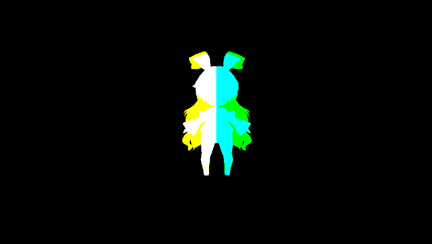
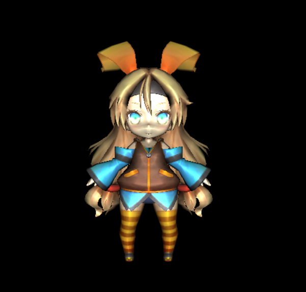

このチャプターでは、次のサンプルプログラムを利用します。ダウンロードをしてください。 Sample_12_02.zip
続いてディファードレンダリングで鏡面反射を実装してみましょう。このハンズオンは12.5のハンズオンの続きになります。鏡面反射ではピクセルのワールド座標のデータが必要になるため、G-Bufferが１枚追加されます。図12.4が今回のハンズオンで作成されるG-Bufferです。
図12.4
では、ハンズオンを行っていきましょう。12.5の内容を全て実装しているサンプルプログラムがあるので、そちらを利用します。Sample_12_1を立ち上げて下さい。
今回実装する鏡面反射は[ほげほげ(章番号を入れる)]で勉強したフォン鏡面反射です。フォン鏡面反射の計算には視点の位置が必要になるので、ライティングの情報に視点のデータを追加します。main.cppにリスト12.7のプログラムを入力してください。 [リスト12.7 main.cpp]
//step-1 ライトの情報に視点を追加
light.eyePos = g_camera3D->GetPosition();
鏡面反射の計算では、ピクセルから視点まで伸びるベクトルを計算する必要があります。その計算のためにワールド座標を記憶するためのG-Bufferを作成しましょう。リスト12.8のプログラムを入力してください。 [リスト12.8 main.cpp]
RenderTarget worldPosRT;
worldPosRT.Create(
FRAME_BUFFER_W,
FRAME_BUFFER_H,
1,
1,
DXGI_FORMAT_R32G32B32A32_FLOAT, //ワールド座標を記録するので、32ビット浮動小数点バッファを利用する。
DXGI_FORMAT_UNKNOWN
);
ワールド座標はアルベドカラーや法線と違い、大きな数値になるため8ビットのバッファでは精度が足りません。ですので、32ビットの浮動小数点バッファを作成しています。
ディファードライティングで先ほど作成したワールド座標のテクスチャを利用するため、spriteInitData.m_textureに追加します。リスト12.9のプログラムを入力して下さい。 [リスト12.9 main.cpp]
//step-3 ディファードライティングで使用するテクスチャにワールド座標テクスチャを追加。
spriteInitData.m_textures[2] = &worldPosRT.GetRenderTargetTexture();
step-3までで初期化のプログラムは終了です。続いて、ドローコールを改造します。レンダリングするG-Bufferの種類が増えたので、RenderToGBufferで設定するレンダリングターゲットを増やします。リスト12.10のプログラムを入力してください。 [リスト12.10 main.cpp]
//step-4 2番目のレンダリングターゲットにworldPosRTを追加。
RenderTarget* rts[] = {
&albedRT, //0番目のレンダリングターゲット
&normalRT, //1番目のレンダリングターゲット
&worldPosRT //2番目のレンダリングターゲット
};
これでC++側のプログラムは終了です。では、続いてHLSL側のプログラムを実装していきましょう。
まずは、RenderToGBufferのシェーダーを改造します。G-Bufferにピクセルのワールド座標を描きこむので、頂点シェーダーで計算されたワールド座標をピクセルシェーダーに渡す必要があります。頂点シェーダーからの出力構造体にワールド座標を出力するためのメンバを追加しましょう。model.fxを開いて、リスト12.11のプログラムを入力してください。 [リスト12.11 model.fx]
//step-5 頂点シェーダーからの出力にワールド座標を追加。
float3 worldPos : TEXCOORD1; //ワールド座標。
続いて、ピクセルシェーダーからの出力構造体を改造します。ピクセルシェーダーからレンダリングターゲット２番目にワー���ド座標を出力する必要があるので、SV_Target2セマンティクスが指定されたメンバを追加しています。model.fxにリスト12.12のプログラムを入力してください。
[リスト12.12 model.fx]
//step 6 ピクセルシェーダーからの出力にワールド座標を追加。
float3 worldPos : SV_Target2; //ワールド座標。
このシェーダーが実行されると、図12.5のワールド座標のG-Bufferが作成されます。 図12.5 
では、プログラムの本体の改造をしていきましょう。まずは頂点シェーダーからワールド座標を出力できるようにしていきましょう。リスト12.13のプログラムを入力してください。 [リスト12.13 model.fx]
//step-7 頂点シェーダーからワールド座標を出力。
psIn.worldPos = psIn.pos;
続いて、ピクセルシェーダーを改造しましょう。ピクセルシェーダーの仕事は頂点シェーダー→ラスタライザで計算されたピクセルのワールド座標をG-Bufferに出力するだけです。リスト12.14のプログラムを入力してください。 [リスト12.14 model.fx]
//step-8 ピクセルシェーダーからワールド座標を出力。
psOut.worldPos = psIn.worldPos;
次はディファードライティングのシェーダーを改造します。鏡面反射を実装するので、定数バッファに視点の位置を追加しましょう。sprite.fxを開いてリスト12.15のプログラムを入力してください。 [リスト12.15 sprite.fx]
//step-9 定数バッファに視点の位置を追加。
float3 eyePos; //視点
RenderToGBufferのパスで作成されたワールド座標テクスチャを利用するので、テクスチャにアクセスするための変数を追加します。ワールド座標テクスチャはcpp側のSprite::Drawの中でt2レジスタに関連付けされています。リスト12.16のプログラムを入力してください。 [リスト12.16 sprite.fx]
//step-10 ワールド座標テクスチャにアクセスするための変数を追加
Texture2D<float4> worldPosTexture : register(t2); //ワールド座標。
では、最後にスペキュラ反射を計算するプロググラムを追加しましょう。スペキュラ反射は[Chpaterほげほげ]で解説したプログラムと同じです。リスト12.17のプログラムを入力して下さい。 [リスト12.17 sprite.fx]
//step-11 スペキュラ反射を計算。
float3 worldPos = worldPosTexture.Sample( Sampler, In.uv).xyz;
float3 toEye = normalize( eyePos - worldPos );
float3 r = reflect( ligDirection, normal);
t = max( 0.0f, dot( toEye, r));
t = pow( t, 5.0f);
lig += ligColor * t;
ここまで入力できたら実行して動作を確認してください。うまくできていれば、図12.6のようにスペキュラ反射が発生しているはずです。 図12.6 